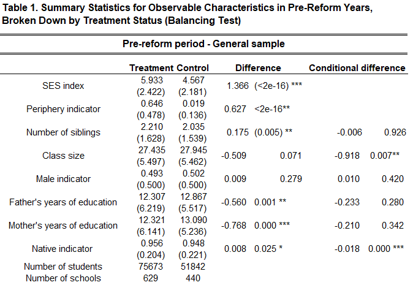

Thesis Results Updated
Micha A.
Load R packages
Introduction
The panel data is clustered by 1069 schools. Schools were observed between 2008-2009, before the start of the program and in 2015-2016 after the end of the program.
Schools were divided into sectors as follows:
##
## 0 1
## 90948 36567“0” - Jewish sector “1” _ Arabic sector
Schools were divided by years and sectors as follows:
##
## 2008 2009 2015 2016
## 0 19228 25790 22326 23604
## 1 8516 10285 8170 9596Schools were divided by treatment as follows:
##
## 0 1
## 51842 75673## 'data.frame': 127515 obs. of 30 variables:
## $ X.1 : int 1 2 3 4 5 6 7 8 9 10 ...
## $ X : int 1 2 3 4 5 6 7 8 9 10 ...
## $ CODE_MOSAD : Factor w/ 1069 levels "D0108756130N0003209990C",..: 168 429 621 571 615 931 429 376 750 733 ...
## $ SHNAT_LIMUD : int 2008 2008 2008 2008 2008 2008 2008 2008 2008 2008 ...
## $ CODE_ZEHUT_TALMID : Factor w/ 127278 levels "D0007155831N0002673851C",..: 1 2 3 4 5 6 7 8 10 11 ...
## $ heb.zscore : num NA 0.367 -0.648 0.599 -0.7 ...
## $ mat.zscore : num NA -0.5281 -0.0668 0.1076 -1.1565 ...
## $ eng.zscore : num 0.665 NA NA NA NA ...
## $ arb.zscore : num NA NA NA NA NA NA NA NA NA NA ...
## $ CODE_MIN : int 0 0 1 0 1 1 0 1 1 0 ...
## $ SHNOT_LIMUD_AV : int 12 0 11 10 12 12 0 12 25 12 ...
## $ SHNOT_LIMUD_EM : int 12 0 12 12 12 13 0 14 12 14 ...
## $ dummy_av_88 : int 0 0 0 0 0 0 0 0 0 0 ...
## $ dummy_em_88 : int 0 0 0 0 0 0 0 0 0 0 ...
## $ CODE_MIGZAR : int 1 0 0 0 0 0 0 0 0 0 ...
## $ CODE_MACHOZ_GEOGRAFI : int 2 6 4 4 4 3 6 1 4 4 ...
## $ treat : int 1 0 1 1 0 0 0 0 0 0 ...
## $ after : int 0 0 0 0 0 0 0 0 0 0 ...
## $ did : int 0 0 0 0 0 0 0 0 0 0 ...
## $ mean_tipuah : num 5.29 6.87 7.46 7.44 6.26 ...
## $ dummy_year_2008 : int 1 1 1 1 1 1 1 1 1 1 ...
## $ dummy_year_2009 : int 0 0 0 0 0 0 0 0 0 0 ...
## $ dummy_year_2015 : int 0 0 0 0 0 0 0 0 0 0 ...
## $ dummy_year_2016 : int 0 0 0 0 0 0 0 0 0 0 ...
## $ mean_kids_per_class_by_school_year: num 32.7 10 34 27.7 18.5 ...
## $ erets_leda_ISR : int 1 1 1 1 1 1 1 1 1 1 ...
## $ mahoz_ind : int 1 1 0 0 0 0 1 0 0 0 ...
## $ MISPAR_ACHIM : int 1 1 4 0 1 1 6 4 0 3 ...
## $ MAKBILA : int 2 1 1 2 2 2 1 2 2 3 ...
## $ SES_index : num 4.93 7.26 7.9 7.4 6.88 ...Number of schools observed in the 2 periods - Before and after the treatment
## [1] 1069Balancing test for general sample

Anlalysis by sectors - Jewish(“0”) vs Arab(“1”)
Balancing test general sample


Obsevations by sectores table
##
## 0 1
## 90948 36567Split the data by sectores
DiD regression with clustered SE - Jewish sector
DiD regression with clustered SE - Arab sector
Combined sector General DiD results
##
## ===================================================================================================
## Jewish sector Arab sector
## ------------------------------------------ ------------------------------------------
## Hebrew Math English Arabic Math English
## ---------------------------------------------------------------------------------------------------
## (Intercept) 0.066 ** 0.183 *** 0.143 *** 0.171 *** -0.217 *** -0.133 **
## (0.027) (0.032) (0.031) (0.052) (0.078) (0.063)
## treat -0.044 -0.025 -0.071 -0.271 *** -0.204 ** -0.091
## (0.037) (0.041) (0.043) (0.069) (0.096) (0.085)
## after -0.045 * -0.041 -0.049 -0.048 0.058 0.088
## (0.025) (0.030) (0.034) (0.061) (0.092) (0.081)
## did 0.046 0.009 -0.048 0.111 0.054 0.071
## (0.037) (0.041) (0.046) (0.075) (0.111) (0.102)
## ---------------------------------------------------------------------------------------------------
## R^2 0.000 0.000 0.004 0.009 0.009 0.005
## Adj. R^2 0.000 0.000 0.004 0.009 0.009 0.005
## Num. obs. 64693 64532 61219 25960 25860 25613
## RMSE 0.982 0.976 0.998 0.993 0.953 0.966
## N Clusters 816 816 740 251 252 252
## ===================================================================================================
## *** p < 0.01; ** p < 0.05; * p < 0.1DiD regression with clustered SE + Fixed effects - Jewish sector
DiD regression with clustered SE + Fixed effects - Arabic sector
Combined sector General DiD results + Fixed effects
##
## ====================================================================================
## Jewish sector Arab sector
## ---------------------------------- ------------------------------------
## Hebrew Math English Arabic Math English
## ------------------------------------------------------------------------------------
## did -0.002 -0.014 -0.029 0.204 ** 0.128 0.105
## (0.038) (0.041) (0.044) (0.097) (0.128) (0.128)
## ------------------------------------------------------------------------------------
## R^2 0.120 0.175 0.168 0.154 0.206 0.183
## Adj. R^2 0.109 0.164 0.157 0.145 0.198 0.175
## Num. obs. 64693 64532 61219 25960 25860 25613
## RMSE 0.927 0.892 0.918 0.922 0.857 0.880
## N Clusters 816 816 740 251 252 252
## ====================================================================================
## *** p < 0.01; ** p < 0.05; * p < 0.1DiD regression with clustered SE + Fixed effects + additional variables - Jewish sector
DiD regression with clustered SE + Fixed effects + additional variables - Arabic sector
Combined sector General DiD results + Fixed effects
##
## =====================================================================================================================
## Jewish sector Arab sector
## ------------------------------------------- -------------------------------------------
## Hebrew Math English Arabic Math English
## ---------------------------------------------------------------------------------------------------------------------
## Diff-in-Diff -0.008 -0.010 -0.007 0.208 ** 0.104 0.106
## (0.038) (0.042) (0.045) (0.102) (0.131) (0.137)
## Sex 0.287 *** -0.133 *** 0.013 0.506 *** 0.134 *** 0.244 ***
## (0.009) (0.010) (0.009) (0.014) (0.015) (0.015)
## Father's years of education 0.011 *** 0.015 *** 0.013 *** -0.002 * -0.000 -0.000
## (0.001) (0.001) (0.001) (0.001) (0.001) (0.001)
## Mother's years of education 0.018 *** 0.021 *** 0.018 *** -0.005 *** -0.001 0.000
## (0.001) (0.002) (0.002) (0.001) (0.002) (0.001)
## Native indicator 0.330 *** 0.099 *** -0.242 *** 0.063 0.030 -0.440 ***
## (0.028) (0.023) (0.024) (0.110) (0.102) (0.108)
## Number of siblings -0.006 0.011 *** -0.063 *** -0.036 *** -0.020 *** -0.034 ***
## (0.004) (0.004) (0.004) (0.004) (0.004) (0.005)
## SES index -0.070 *** 0.002 -0.023 0.003 0.004 0.057
## (0.023) (0.027) (0.033) (0.057) (0.087) (0.115)
## Class size 0.006 ** -0.001 -0.006 * 0.008 0.005 -0.006
## (0.003) (0.004) (0.004) (0.006) (0.012) (0.011)
## ---------------------------------------------------------------------------------------------------------------------
## R^2 0.157 0.198 0.187 0.220 0.214 0.202
## Adj. R^2 0.146 0.188 0.177 0.212 0.206 0.193
## Num. obs. 64492 64313 61041 25899 25797 25568
## RMSE 0.905 0.879 0.907 0.885 0.853 0.870
## N Clusters 816 816 740 251 252 252
## =====================================================================================================================
## *** p < 0.01; ** p < 0.05; * p < 0.1DiD regression by regions - periphery vs rest
Because almost all observation in the north and south regions took part in the program, I will check only the difference in the other regions.

Split the data by regions periphery (“0”) and rest (“1”)
Split final.df_rest by sector
Table of observations per region
## Periphery Rest
## 77612 49903Table of observations per region per sector
##
## Jewish Arab
## Periphery 65920 11692
## Rest 25028 24875Simple DiD regression on rest regions by sectores
DiD regression with clustered SE - rest regions - Jewish sector only
DiD regression with clustered SE - rest regions - Arab sector only
Combined sector General DiD results - Rest of israel by sectors
##
## ==================================================================================================
## Jewish sector Arab sector
## ------------------------------------------- ----------------------------------------
## Hebrew Math English Arabic Math English
## --------------------------------------------------------------------------------------------------
## (Intercept) 0.081 *** 0.206 *** 0.143 *** 0.171 *** -0.217 *** -0.135 **
## (0.026) (0.031) (0.031) (0.052) (0.079) (0.064)
## treat -0.041 -0.021 0.021 -0.638 *** -0.393 ** -0.503 ***
## (0.048) (0.050) (0.052) (0.120) (0.158) (0.179)
## after -0.049 * -0.048 -0.047 -0.050 0.059 0.087
## (0.026) (0.030) (0.034) (0.061) (0.093) (0.082)
## did 0.136 *** 0.110 ** -0.005 0.207 0.129 0.362
## (0.048) (0.051) (0.053) (0.165) (0.224) (0.221)
## --------------------------------------------------------------------------------------------------
## R^2 0.002 0.001 0.001 0.034 0.015 0.010
## Adj. R^2 0.002 0.001 0.001 0.034 0.015 0.010
## Num. obs. 46435 46268 44679 8276 8326 8205
## RMSE 0.964 0.971 0.992 0.944 0.935 0.955
## N Clusters 577 577 519 78 78 78
## ==================================================================================================
## *** p < 0.01; ** p < 0.05; * p < 0.1DiD regression with clustered SE + Fixed effects
DiD regression with clustered SE + Fixed effects - Jewish sector
DiD regression with clustered SE + Fixed effects - Arab sector
Combined sector General DiD results + Fixed effects - Rest of israel by sectors
##
## =====================================================================================
## Jewish sector Arab sector
## ------------------------------------ -----------------------------------
## Hebrew Math English Arabic Math English
## -------------------------------------------------------------------------------------
## did 0.089 * 0.098 * -0.029 0.446 *** 0.457 * 0.189
## (0.049) (0.052) (0.050) (0.106) (0.251) (0.223)
## -------------------------------------------------------------------------------------
## R^2 0.124 0.176 0.160 0.138 0.175 0.157
## Adj. R^2 0.113 0.166 0.150 0.129 0.167 0.148
## Num. obs. 46435 46268 44679 8276 8326 8205
## RMSE 0.909 0.887 0.914 0.896 0.860 0.885
## N Clusters 577 577 519 78 78 78
## =====================================================================================
## *** p < 0.01; ** p < 0.05; * p < 0.1DiD regression with clustered SE + Fixed effects + additional variables
DiD regression with clustered SE + Fixed effects + additional variables - Jewish sector
DiD regression with clustered SE + Fixed effects + additional variables - Arab sector
Combined sector General DiD results + Fixed effects + Aditional vars - Rest of israel by sectors
##
## ==================================================================================================================
## Jewish sector Arab sector
## ------------------------------------------- ----------------------------------------
## Hebrew Math English Arabic Math English
## ------------------------------------------------------------------------------------------------------------------
## Diff-in-Diff 0.093 * 0.100 * -0.007 0.375 *** 0.346 0.228
## (0.050) (0.054) (0.049) (0.130) (0.262) (0.297)
## Sex 0.268 *** -0.142 *** 0.012 0.463 *** 0.093 *** 0.212 ***
## (0.010) (0.011) (0.011) (0.019) (0.020) (0.024)
## Father's years of education 0.011 *** 0.016 *** 0.014 *** -0.000 -0.000 0.001
## (0.001) (0.001) (0.001) (0.002) (0.002) (0.002)
## Mother's years of education 0.018 *** 0.022 *** 0.020 *** -0.005 * 0.001 0.003
## (0.002) (0.002) (0.002) (0.002) (0.003) (0.002)
## Native indicator 0.306 *** 0.103 *** -0.236 *** 0.090 0.142 -0.477 **
## (0.031) (0.027) (0.028) (0.145) (0.124) (0.188)
## Number of siblings -0.005 0.012 *** -0.062 *** -0.046 *** -0.026 *** -0.051 ***
## (0.005) (0.004) (0.005) (0.006) (0.008) (0.007)
## SES index -0.080 *** -0.022 0.005 0.075 0.141 0.095
## (0.025) (0.030) (0.036) (0.089) (0.187) (0.239)
## Class size 0.005 -0.004 -0.006 0.016 0.012 0.002
## (0.003) (0.005) (0.005) (0.012) (0.019) (0.016)
## ------------------------------------------------------------------------------------------------------------------
## R^2 0.159 0.202 0.184 0.201 0.181 0.173
## Adj. R^2 0.148 0.192 0.174 0.192 0.172 0.164
## Num. obs. 46247 46062 44531 8261 8310 8171
## RMSE 0.887 0.872 0.901 0.863 0.857 0.877
## N Clusters 577 577 519 78 78 78
## ==================================================================================================================
## *** p < 0.01; ** p < 0.05; * p < 0.1SES index analysis
Split SES index to 3 levels index.
final.df.elion <- finald %>%
filter(SES_index <= 4)
final.df.emtsae <- finald %>%
filter(SES_index > 4 & SES_index <= 7)
final.df.tahton <- finald %>%
filter(SES_index > 7)Split thirds by sector
final.df.elion.jew <- final.df.elion %>%
filter(CODE_MIGZAR == "0")
final.df.elion.arb <- final.df.elion %>%
filter(CODE_MIGZAR == "1")
final.df.emtsae.jew <- final.df.emtsae %>%
filter(CODE_MIGZAR == "0")
final.df.emtsae.arb <- final.df.emtsae %>%
filter(CODE_MIGZAR == "1")
final.df.tahton.jew <- final.df.tahton %>%
filter(CODE_MIGZAR == "0")
final.df.tahton.arb <- final.df.tahton %>%
filter(CODE_MIGZAR == "1")Analysis of top Upper third
Simple DiD regression
DiD regression with clustered SE - Jewish sector only
Combined sector General DiD results - Rest of israel by sectors
##
## ========================================================
## Jewish sector
## -------------------------------------------
## Hebrew Math English
## --------------------------------------------------------
## (Intercept) 0.250 *** 0.360 *** 0.261 ***
## (0.028) (0.032) (0.033)
## treat -0.047 -0.025 -0.004
## (0.041) (0.051) (0.055)
## after -0.062 ** -0.030 -0.066
## (0.031) (0.036) (0.041)
## did 0.121 ** 0.052 0.030
## (0.047) (0.055) (0.062)
## --------------------------------------------------------
## R^2 0.001 0.000 0.001
## Adj. R^2 0.001 0.000 0.001
## Num. obs. 28278 28140 30015
## RMSE 0.878 0.910 0.952
## N Clusters 316 316 310
## ========================================================
## *** p < 0.01; ** p < 0.05; * p < 0.1DiD regression with clustered SE + Fixed effects
DiD regression with clustered SE + Fixed effects - Jewish sector
Combined sector General DiD results + Fixed effects - Rest of israel by sectors
##
## ==============================================
## Jewish sector
## ----------------------------------
## Hebrew Math English
## ----------------------------------------------
## did 0.017 -0.054 0.028
## (0.057) (0.061) (0.053)
## ----------------------------------------------
## R^2 0.068 0.103 0.134
## Adj. R^2 0.058 0.093 0.125
## Num. obs. 28278 28140 30015
## RMSE 0.852 0.867 0.891
## N Clusters 316 316 310
## ==============================================
## *** p < 0.01; ** p < 0.05; * p < 0.1DiD regression with clustered SE + Fixed effects + additional variables
DiD regression with clustered SE + Fixed effects + additional variables - Jewish sector
Combined sector General DiD results + Fixed effects + Additional vars
##
## ========================================================================
## Jewish sector
## -------------------------------------------
## Hebrew Math English
## ------------------------------------------------------------------------
## Diff-in-Diff 0.012 -0.067 0.051
## (0.059) (0.061) (0.053)
## Sex 0.260 *** -0.176 *** -0.004
## (0.012) (0.012) (0.012)
## Father's years of education 0.015 *** 0.019 *** 0.018 ***
## (0.002) (0.002) (0.002)
## Mother's years of education 0.019 *** 0.026 *** 0.022 ***
## (0.002) (0.003) (0.003)
## Native indicator 0.204 *** 0.042 -0.335 ***
## (0.033) (0.031) (0.030)
## Number of siblings 0.011 * 0.032 *** -0.052 ***
## (0.006) (0.006) (0.006)
## Class size 0.004 -0.001 0.002
## (0.005) (0.005) (0.005)
## ------------------------------------------------------------------------
## R^2 0.111 0.146 0.162
## Adj. R^2 0.100 0.136 0.153
## Num. obs. 28237 28103 29973
## RMSE 0.832 0.845 0.876
## N Clusters 316 316 310
## ========================================================================
## *** p < 0.01; ** p < 0.05; * p < 0.1Analysis of top Middle third
DiD regression with clustered SE
DiD regression with clustered SE - rest regions - Jewish sector only
DiD regression with clustered SE - rest regions - Arab sector only
Combined sector General DiD results - Rest of israel by sectors
##
## ========================================================================================
## Jewish sector Arab sector
## ------------------------------------- ------------------------------------
## Hebrew Math English Arabic Math English
## ----------------------------------------------------------------------------------------
## (Intercept) -0.041 0.079 -0.087 0.322 *** -0.016 -0.026
## (0.032) (0.050) (0.055) (0.079) (0.140) (0.086)
## treat 0.033 0.054 -0.026 -0.176 * -0.420 ** 0.078
## (0.052) (0.062) (0.072) (0.097) (0.162) (0.118)
## after -0.078 ** -0.097 * 0.027 -0.153 -0.066 0.075
## (0.037) (0.053) (0.064) (0.101) (0.156) (0.124)
## did 0.082 0.038 -0.033 0.256 ** 0.321 * 0.008
## (0.059) (0.070) (0.083) (0.125) (0.184) (0.155)
## ----------------------------------------------------------------------------------------
## R^2 0.002 0.003 0.001 0.004 0.026 0.003
## Adj. R^2 0.002 0.003 0.000 0.004 0.026 0.003
## Num. obs. 26988 26981 23465 5787 5836 5996
## RMSE 0.987 0.982 1.021 0.901 0.900 0.908
## N Clusters 408 407 360 64 65 65
## ========================================================================================
## *** p < 0.01; ** p < 0.05; * p < 0.1DiD regression with clustered SE + Fixed effects
DiD regression with clustered SE + Fixed effects - Jewish sector
DiD regression with clustered SE + Fixed effects - Arab sector
Combined sector General DiD results + Fixed effects - Rest of israel by sectors
##
## =================================================================================
## Jewish sector Arab sector
## ---------------------------------- ---------------------------------
## Hebrew Math English Arabic Math English
## ---------------------------------------------------------------------------------
## did 0.044 0.090 -0.048 0.127 0.356 ** 0.208
## (0.071) (0.077) (0.087) (0.221) (0.163) (0.280)
## ---------------------------------------------------------------------------------
## R^2 0.091 0.166 0.167 0.094 0.174 0.134
## Adj. R^2 0.077 0.153 0.154 0.084 0.164 0.124
## Num. obs. 26988 26981 23465 5787 5836 5996
## RMSE 0.950 0.905 0.939 0.864 0.834 0.851
## N Clusters 408 407 360 64 65 65
## =================================================================================
## *** p < 0.01; ** p < 0.05; * p < 0.1DiD regression with clustered SE + Fixed effects + additional variables - Jewish sector
DiD regression with clustered SE + Fixed effects + additional variables - Arab sector
Combined sector General DiD results + Fixed effects + Aditional vars - Rest of israel by sectors
##
## ==================================================================================================================
## Jewish sector Arab sector
## ------------------------------------------- ----------------------------------------
## Hebrew Math English Arabic Math English
## ------------------------------------------------------------------------------------------------------------------
## Diff-in-Diff 0.052 0.110 -0.066 0.082 0.272 0.193
## (0.073) (0.077) (0.084) (0.236) (0.232) (0.287)
## Sex 0.292 *** -0.098 *** 0.026 0.441 *** 0.068 *** 0.183 ***
## (0.015) (0.017) (0.017) (0.021) (0.021) (0.027)
## Father's years of education 0.010 *** 0.013 *** 0.013 *** 0.005 0.008 *** 0.003
## (0.002) (0.002) (0.002) (0.003) (0.003) (0.004)
## Mother's years of education 0.019 *** 0.021 *** 0.017 *** 0.001 0.005 0.012 ***
## (0.002) (0.002) (0.003) (0.004) (0.004) (0.004)
## Native indicator 0.404 *** 0.152 *** -0.202 *** 0.181 0.110 -0.452 *
## (0.045) (0.037) (0.040) (0.203) (0.195) (0.231)
## Number of siblings -0.002 0.010 * -0.066 *** -0.037 *** -0.034 *** -0.061 ***
## (0.005) (0.005) (0.006) (0.008) (0.010) (0.012)
## Class size 0.006 -0.005 -0.017 *** 0.024 0.028 -0.012
## (0.005) (0.007) (0.007) (0.015) (0.031) (0.022)
## ------------------------------------------------------------------------------------------------------------------
## R^2 0.130 0.188 0.187 0.157 0.181 0.154
## Adj. R^2 0.116 0.175 0.173 0.146 0.170 0.143
## Num. obs. 26924 26909 23406 5784 5834 5994
## RMSE 0.927 0.894 0.928 0.834 0.830 0.842
## N Clusters 408 407 360 64 65 65
## ==================================================================================================================
## *** p < 0.01; ** p < 0.05; * p < 0.1Analysis of top Lower third
DiD regression with clustered SE
DiD regression with clustered SE - rest regions - Jewish sector only
DiD regression with clustered SE - rest regions - Arab sector only
Combined sector General DiD results - Rest of israel by sectors
##
## ================================================================================================
## Jewish sector Arab sector
## --------------------------------------- ------------------------------------------
## Hebrew Math English Arabic Math English
## ------------------------------------------------------------------------------------------------
## (Intercept) -0.461 *** -0.338 ** -0.250 ** 0.102 * -0.309 *** -0.207 **
## (0.118) (0.134) (0.119) (0.058) (0.083) (0.086)
## treat 0.258 ** 0.266 * 0.263 ** -0.255 *** -0.103 -0.112
## (0.129) (0.141) (0.133) (0.077) (0.106) (0.108)
## after -0.065 -0.098 0.141 -0.020 0.080 0.078
## (0.122) (0.157) (0.139) (0.074) (0.109) (0.104)
## did -0.095 -0.013 -0.417 *** 0.094 0.004 0.146
## (0.135) (0.168) (0.154) (0.090) (0.130) (0.129)
## ------------------------------------------------------------------------------------------------
## R^2 0.010 0.014 0.016 0.007 0.003 0.009
## Adj. R^2 0.009 0.014 0.016 0.007 0.003 0.009
## Num. obs. 9387 9368 7721 20145 19997 19450
## RMSE 1.109 1.007 0.996 1.011 0.965 0.977
## N Clusters 185 185 151 204 204 201
## ================================================================================================
## *** p < 0.01; ** p < 0.05; * p < 0.1DiD regression with clustered SE + Fixed effects
DiD regression with clustered SE + Fixed effects - Jewish sector
DiD regression with clustered SE + Fixed effects - Arab sector
Combined sector General DiD results + Fixed effects - Rest of israel by sectors
##
## ===============================================================================
## Jewish sector Arab sector
## ------------------------------- ----------------------------------
## Hebrew Math English Arabic Math English
## -------------------------------------------------------------------------------
## did 0.072 0.020 -0.089 0.191 0.140 0.029
## (0.151) (0.168) (0.188) (0.137) (0.173) (0.164)
## -------------------------------------------------------------------------------
## R^2 0.127 0.214 0.153 0.158 0.223 0.191
## Adj. R^2 0.109 0.198 0.136 0.150 0.214 0.183
## Num. obs. 9387 9368 7721 20145 19997 19450
## RMSE 1.052 0.908 0.933 0.936 0.857 0.887
## N Clusters 185 185 151 204 204 201
## ===============================================================================
## *** p < 0.01; ** p < 0.05; * p < 0.1DiD regression with clustered SE + Fixed effects + additional variables - Jewish sector
DiD regression with clustered SE + Fixed effects + additional variables - Arab sector
Combined sector General DiD results + Fixed effects + Aditional vars - Rest of israel by sectors
##
## ==================================================================================================================
## Jewish sector Arab sector
## ---------------------------------------- -------------------------------------------
## Hebrew Math English Arabic Math English
## ------------------------------------------------------------------------------------------------------------------
## Diff-in-Diff 0.089 0.045 -0.084 0.206 0.142 0.016
## (0.150) (0.156) (0.183) (0.127) (0.169) (0.192)
## Sex 0.360 *** -0.088 *** 0.044 0.522 *** 0.151 *** 0.266 ***
## (0.027) (0.025) (0.028) (0.017) (0.018) (0.018)
## Father's years of education 0.007 *** 0.009 *** 0.002 -0.003 ** -0.002 -0.001
## (0.003) (0.002) (0.002) (0.001) (0.001) (0.001)
## Mother's years of education 0.013 *** 0.014 *** 0.011 *** -0.006 *** -0.002 -0.002
## (0.003) (0.003) (0.003) (0.002) (0.002) (0.002)
## Native indicator 0.443 *** 0.133 *** -0.149 *** -0.002 0.000 -0.454 ***
## (0.070) (0.050) (0.047) (0.138) (0.110) (0.117)
## Number of siblings -0.048 *** -0.021 ** -0.088 *** -0.036 *** -0.018 *** -0.029 ***
## (0.010) (0.008) (0.013) (0.005) (0.005) (0.005)
## Class size 0.011 0.008 -0.008 0.009 0.005 -0.002
## (0.008) (0.009) (0.014) (0.007) (0.014) (0.015)
## ------------------------------------------------------------------------------------------------------------------
## R^2 0.165 0.223 0.171 0.228 0.230 0.212
## Adj. R^2 0.147 0.207 0.153 0.220 0.222 0.203
## Num. obs. 9331 9301 7662 20115 19963 19428
## RMSE 1.025 0.902 0.922 0.896 0.853 0.876
## N Clusters 185 185 151 204 204 201
## ==================================================================================================================
## *** p < 0.01; ** p < 0.05; * p < 0.1Reorginize ses tables
Lower third
Jewish sector - all models for all 3 subjects
##
## ==========================================================================================================================================
## Hebrew English Math
## ---------------------------------- ------------------------------------- ----------------------------------
## Model 1 Model 2 Model 3 Model 1 Model 2 Model 3 Model 1 Model 2 Model 3
## ------------------------------------------------------------------------------------------------------------------------------------------
## Diff-in-Diff -0.095 0.072 0.089 -0.417 *** -0.089 -0.084 -0.013 0.020 0.045
## (0.135) (0.151) (0.150) (0.154) (0.188) (0.183) (0.168) (0.168) (0.156)
## Sex 0.360 *** 0.044 -0.088 ***
## (0.027) (0.028) (0.025)
## Father's years of education 0.007 *** 0.002 0.009 ***
## (0.003) (0.002) (0.002)
## Mother's years of education 0.013 *** 0.011 *** 0.014 ***
## (0.003) (0.003) (0.003)
## Native indicator 0.443 *** -0.149 *** 0.133 ***
## (0.070) (0.047) (0.050)
## Number of siblings -0.048 *** -0.088 *** -0.021 **
## (0.010) (0.013) (0.008)
## Class size 0.011 -0.008 0.008
## (0.008) (0.014) (0.009)
## ------------------------------------------------------------------------------------------------------------------------------------------
## R^2 0.010 0.127 0.165 0.016 0.153 0.171 0.014 0.214 0.223
## Adj. R^2 0.009 0.109 0.147 0.016 0.136 0.153 0.014 0.198 0.207
## Num. obs. 9387 9387 9331 7721 7721 7662 9368 9368 9301
## RMSE 1.109 1.052 1.025 0.996 0.933 0.922 1.007 0.908 0.902
## N Clusters 185 185 185 151 151 151 185 185 185
## ==========================================================================================================================================
## *** p < 0.01; ** p < 0.05; * p < 0.1Arab sector - all models for all 3 subjects
##
## ================================================================================================================================================
## Hebrew English Math
## ------------------------------------- ------------------------------------- -------------------------------------
## Model 1 Model 2 Model 3 Model 1 Model 2 Model 3 Model 1 Model 2 Model 3
## ------------------------------------------------------------------------------------------------------------------------------------------------
## Diff-in-Diff 0.094 0.191 0.206 0.146 0.029 0.016 0.004 0.140 0.142
## (0.090) (0.137) (0.127) (0.129) (0.164) (0.192) (0.130) (0.173) (0.169)
## Sex 0.522 *** 0.266 *** 0.151 ***
## (0.017) (0.018) (0.018)
## Father's years of education -0.003 ** -0.001 -0.002
## (0.001) (0.001) (0.001)
## Mother's years of education -0.006 *** -0.002 -0.002
## (0.002) (0.002) (0.002)
## Native indicator -0.002 -0.454 *** 0.000
## (0.138) (0.117) (0.110)
## Number of siblings -0.036 *** -0.029 *** -0.018 ***
## (0.005) (0.005) (0.005)
## Class size 0.009 -0.002 0.005
## (0.007) (0.015) (0.014)
## ------------------------------------------------------------------------------------------------------------------------------------------------
## R^2 0.007 0.158 0.228 0.009 0.191 0.212 0.003 0.223 0.230
## Adj. R^2 0.007 0.150 0.220 0.009 0.183 0.203 0.003 0.214 0.222
## Num. obs. 20145 20145 20115 19450 19450 19428 19997 19997 19963
## RMSE 1.011 0.936 0.896 0.977 0.887 0.876 0.965 0.857 0.853
## N Clusters 204 204 204 201 201 201 204 204 204
## ================================================================================================================================================
## *** p < 0.01; ** p < 0.05; * p < 0.1Middle third
Jewish sector - all models for all 3 subjects
##
## ================================================================================================================================================
## Hebrew English Math
## ------------------------------------- ------------------------------------- -------------------------------------
## Model 1 Model 2 Model 3 Model 1 Model 2 Model 3 Model 1 Model 2 Model 3
## ------------------------------------------------------------------------------------------------------------------------------------------------
## Diff-in-Diff 0.082 0.044 0.052 -0.033 -0.048 -0.066 0.038 0.090 0.110
## (0.059) (0.071) (0.073) (0.083) (0.087) (0.084) (0.070) (0.077) (0.077)
## Sex 0.292 *** 0.026 -0.098 ***
## (0.015) (0.017) (0.017)
## Father's years of education 0.010 *** 0.013 *** 0.013 ***
## (0.002) (0.002) (0.002)
## Mother's years of education 0.019 *** 0.017 *** 0.021 ***
## (0.002) (0.003) (0.002)
## Native indicator 0.404 *** -0.202 *** 0.152 ***
## (0.045) (0.040) (0.037)
## Number of siblings -0.002 -0.066 *** 0.010 *
## (0.005) (0.006) (0.005)
## Class size 0.006 -0.017 *** -0.005
## (0.005) (0.007) (0.007)
## ------------------------------------------------------------------------------------------------------------------------------------------------
## R^2 0.002 0.091 0.130 0.001 0.167 0.187 0.003 0.166 0.188
## Adj. R^2 0.002 0.077 0.116 0.000 0.154 0.173 0.003 0.153 0.175
## Num. obs. 26988 26988 26924 23465 23465 23406 26981 26981 26909
## RMSE 0.987 0.950 0.927 1.021 0.939 0.928 0.982 0.905 0.894
## N Clusters 408 408 408 360 360 360 407 407 407
## ================================================================================================================================================
## *** p < 0.01; ** p < 0.05; * p < 0.1Arab sector - all models for all 3 subjects
##
## ============================================================================================================================================
## Hebrew English Math
## ------------------------------------ ---------------------------------- -------------------------------------
## Model 1 Model 2 Model 3 Model 1 Model 2 Model 3 Model 1 Model 2 Model 3
## --------------------------------------------------------------------------------------------------------------------------------------------
## Diff-in-Diff 0.256 ** 0.127 0.082 0.008 0.208 0.193 0.321 * 0.356 ** 0.272
## (0.125) (0.221) (0.236) (0.155) (0.280) (0.287) (0.184) (0.163) (0.232)
## Sex 0.441 *** 0.183 *** 0.068 ***
## (0.021) (0.027) (0.021)
## Father's years of education 0.005 0.003 0.008 ***
## (0.003) (0.004) (0.003)
## Mother's years of education 0.001 0.012 *** 0.005
## (0.004) (0.004) (0.004)
## Native indicator 0.181 -0.452 * 0.110
## (0.203) (0.231) (0.195)
## Number of siblings -0.037 *** -0.061 *** -0.034 ***
## (0.008) (0.012) (0.010)
## Class size 0.024 -0.012 0.028
## (0.015) (0.022) (0.031)
## --------------------------------------------------------------------------------------------------------------------------------------------
## R^2 0.004 0.094 0.157 0.003 0.134 0.154 0.026 0.174 0.181
## Adj. R^2 0.004 0.084 0.146 0.003 0.124 0.143 0.026 0.164 0.170
## Num. obs. 5787 5787 5784 5996 5996 5994 5836 5836 5834
## RMSE 0.901 0.864 0.834 0.908 0.851 0.842 0.900 0.834 0.830
## N Clusters 64 64 64 65 65 65 65 65 65
## ============================================================================================================================================
## *** p < 0.01; ** p < 0.05; * p < 0.1Upper third
Jewish sector - all models for all 3 subjects
##
## ==================================================================================================================================================
## Hebrew English Math
## --------------------------------------- ------------------------------------- -------------------------------------
## Model 1 Model 2 Model 3 Model 1 Model 2 Model 3 Model 1 Model 2 Model 3
## --------------------------------------------------------------------------------------------------------------------------------------------------
## Diff-in-Diff 0.121 ** 0.017 0.012 0.030 0.028 0.051 0.052 -0.054 -0.067
## (0.047) (0.057) (0.059) (0.062) (0.053) (0.053) (0.055) (0.061) (0.061)
## Sex 0.260 *** -0.004 -0.176 ***
## (0.012) (0.012) (0.012)
## Father's years of education 0.015 *** 0.018 *** 0.019 ***
## (0.002) (0.002) (0.002)
## Mother's years of education 0.019 *** 0.022 *** 0.026 ***
## (0.002) (0.003) (0.003)
## Native indicator 0.204 *** -0.335 *** 0.042
## (0.033) (0.030) (0.031)
## Number of siblings 0.011 * -0.052 *** 0.032 ***
## (0.006) (0.006) (0.006)
## Class size 0.004 0.002 -0.001
## (0.005) (0.005) (0.005)
## --------------------------------------------------------------------------------------------------------------------------------------------------
## R^2 0.001 0.068 0.111 0.001 0.134 0.162 0.000 0.103 0.146
## Adj. R^2 0.001 0.058 0.100 0.001 0.125 0.153 0.000 0.093 0.136
## Num. obs. 28278 28278 28237 30015 30015 29973 28140 28140 28103
## RMSE 0.878 0.852 0.832 0.952 0.891 0.876 0.910 0.867 0.845
## N Clusters 316 316 316 310 310 310 316 316 316
## ==================================================================================================================================================
## *** p < 0.01; ** p < 0.05; * p < 0.1